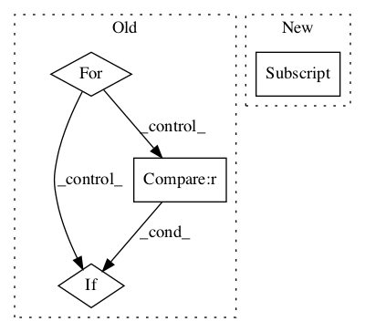

Pattern ID :83

Before Change
classCounts = self.counts[instance.attrs[index]]
max, maxClass = 0, None
classValues = classCounts.keys()
for classValue in classValues:
count = classCounts[classValue]
if count > max:
max = count
maxClass = classValue
return maxClass
After Change
return float(errors)/ total
def klass(self, instance):
return self.maxCounts[instance.valueAt(self.index)].klassValue
class MaxKlassCount:
In pattern: SUPERPATTERN
Frequency: 3
Non-data size: 4
Instances
Fragment ID: 105840
Project Name: nltk/nltk
Commit Name: 42276cfc3ce385117e2d7fb8c3899e3713479128
Time: 2007-03-17
Author: sumukh.ghodke@gmail.com
File Name: nltk_lite/contrib/classifier/nltk_lite_contrib/classifier/decisionstump.py
Class Name: DecisionStump
Method Name: klass
Fragment ID: 105837
Project Name: nltk/nltk
Commit Name: c13dc985eec4e69cacd446bac7265c6f8667af83
Time: 2015-01-02
Author: dimazest@gmail.com
File Name: nltk/parse/dependencygraph.py
Class Name: DependencyGraph
Method Name: add_arc
Fragment ID: 105839
Project Name: nltk/nltk
Commit Name: 8b551a11d3752ad37fad9eb1bbd7e647751fe360
Time: 2014-12-28
Author: dimazest@gmail.com
File Name: nltk/parse/dependencygraph.py
Class Name: DependencyGraph
Method Name: get_by_address